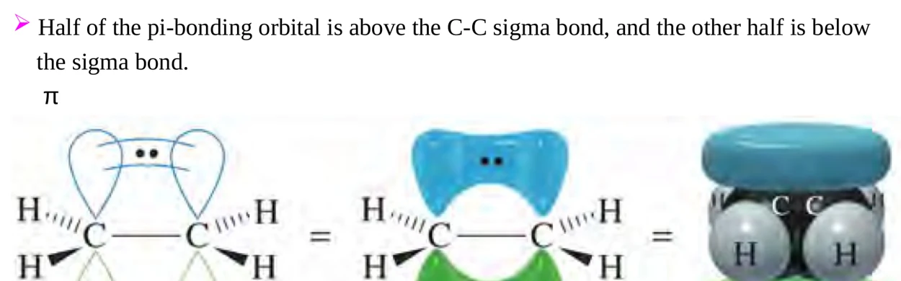
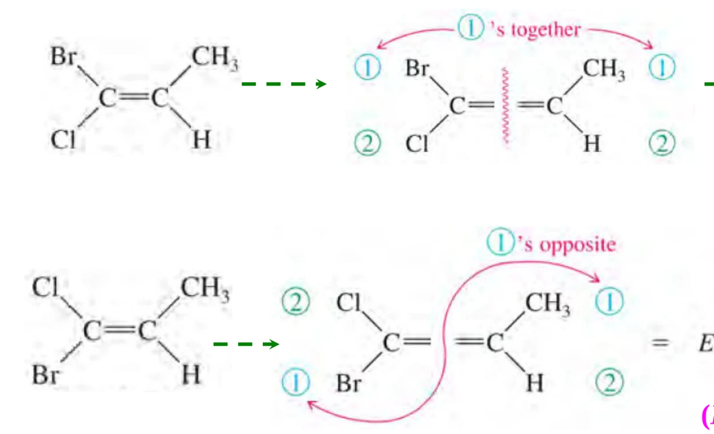
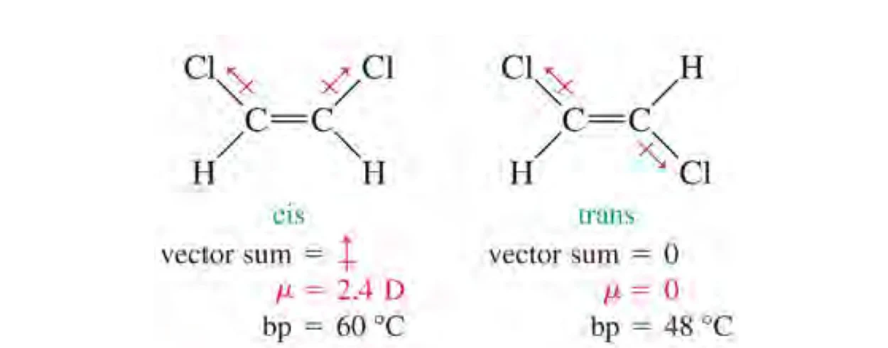

WEBSITE LESSON 14 · LECTURE 13 · CHAPTER 7-1
烯烃的结构与性质
分类与中英命名 · sp² 与 π 键 · 不饱和度 · E/Z · 物理性质
14.1 · CLASSIFICATION & NOMENCLATURE
烯烃分类与系统命名
烯烃（alkene，又称 olefin）是含碳碳双键的烃。按位置分端烯烃和内烯烃；按数目分单烯、二烯和多烯。二烯还分累积型 CH2=C=CH2、共轭型 CH2=CH–CH=CH2，以及两个双键间隔至少两个单键的孤立型。识别连接方式后再命名，避免把所有二烯都当成共轭体系。
对本课的烃类，先选包含尽可能多双键的母链，再在满足这一条件的候选中选最长链；从使双键位次组最小的一端编号，比较第一处不同的位次。双键位置优先于烷基位置，以双键两个碳中较小的编号定位。最后标明取代基；英文按字母顺序排列，di、tri 等数目前缀不参加排序。
英文拼装模板为“构型前缀＋取代基位次与名称＋母体碳链＋双键位次＋ene”。例如 CH2=CH–CH(CH3)–CH2–CH3 为 3-methylpent-1-ene，中文为 3-甲基-1-戊烯。多双键写 buta-1,3-diene；各双键都需定位。课件并列旧式 1-butene 与新式 but-1-ene，本页统一优先使用后一形式。
单环单烯让双键占 1、2 位，再选使取代基位次最低的方向；3-methylcyclopent-1-ene 即 3-甲基环戊烯。中文取代基排列按课程教材的命名体系，英文词序应单独检查，不直接照搬中文。
读名称还原结构时，顺序与命名相反：先画母体，再放双键，然后逐个接上取代基，最后补氢并核对碳的四价。以 3-methylpent-1-ene 为例，母链有五个碳，加上甲基共有六个碳，分子式应为 C6H12；用碳数和 DBE 可以交叉检查是否漏画支链或误放双键。
来源：Org. Chem. Lect. 13 (Chapter 7-1)，slide 3–9、16。
14.2 · COMMON NAMES & ALKENYL GROUPS
常用名与烯基：连接点决定身份
ethylene、propylene、isobutylene、isoprene、styrene 分别是乙烯、丙烯、异丁烯、异戊二烯和苯乙烯的常用名；异丁烯的系统名为 2-methylpropene。名称出现 vinyl 或 allyl 时，要从与母体相连的位置看结构：乙烯基是 CH2=CH–，烯丙基是 CH2=CH–CH2–，二者相差一个亚甲基。
亚甲基作为外双键取代基写 =CH2（methylidene，常用 methylene）；作为饱和链片段则写 –CH2–。判断时同时看连接点、键级和剩余价键。烯丙基卤的卤素连在邻双键的饱和碳上，乙烯基卤的卤素直接连双键碳，这一差别会延续到取代和消除活性。
来源：Org. Chem. Lect. 13 (Chapter 7-1)，slide 5、10。
14.3 · ORBITALS & RESTRICTED ROTATION
sp² 杂化、π键与受限旋转
乙烯的每个碳用三个 sp2 杂化轨道形成平面内的 σ 键，剩余一个未杂化 p 轨道垂直于平面。两个平行 p 轨道侧向重叠形成 π 键，电子密度分布在分子平面上下；上下两瓣合起来是同一个 π 成键轨道。两个双键碳及其直接连接的四个原子近似共平面，键角约 120°。
双键更短与额外成键和 sp2 轨道较高的 s 成分有关。绕 C=C 扭转会减弱 p 轨道重叠，转到近乎垂直时 π 成键基本丧失，因此常温下不能像普通单键那样自由旋转。顺反异构体通常要经过破坏 π 成键的过程才能互变。
课件以平均键能估算：C=C 约 611 kJ·mol−1，C–C 约 347 kJ·mol−1，差值约 264 kJ·mol−1 用来理解 π 成键较弱。这里比较的是不同键环境的近似差值；双键总键能仍高于单键。烯烃加成时通常以新的 σ 键代替 π 成键，因此双键是重要反应中心。

来源：Org. Chem. Lect. 13 (Chapter 7-1)，slide 17–19、24。
14.4 · DEGREE OF UNSATURATION
不饱和度：由缺氢数约束结构
开链饱和烃通式为 CnH2n+2。形成一个环或一个双键均少两个氢，一个三键少四个氢；不饱和度 DBE 就是相对于饱和参考式的缺氢对数。开链单烯和单环烷烃都有 CnH2n，需要进一步区分连接方式。
C、H、N、X 分别表示碳、氢、氮和卤素的原子数。卤素替代一个氢，按氢计；三价氮使饱和参考式多容纳一个氢，所以分子中每有一个氮，分子式上方加一；氧和通常二价的硫不改变氢容量，直接忽略。含氧环贡献的 DBE 来自成环，羰基贡献的 DBE 来自 C=O 双键，始终不另给氧原子赋值。
例如 C4H8 的 DBE=1，可对应丁烯或环丁烷；C6H12O 的 DBE=1，可有一个环、C=C 或 C=O；C4H9N 的 DBE=1。C6H6 的 DBE=4，与苯的三双键加一环一致。常规中性闭壳层分子若算出负数或半整数，优先检查分子式、价态和电荷。
来源：Org. Chem. Lect. 13 (Chapter 7-1)，slide 20–23。
14.5 · GEOMETRIC ISOMERISM
顺反与 E/Z：两端分别排优先级
双键每一端都连接两个不同基团，才有通常的 E/Z 异构。CH2=CH–R 的端位碳连两个氢，2-甲基丙烯的一端连两个甲基，均无 E/Z。对 2-丁烯可比较两个甲基：同侧为 cis，异侧为 trans。对于不同卤素或多种烷基混合取代，E/Z 能明确指定比较对象。
CIP 判断按三步做：第一，分别比较双键两端直接相连原子的原子序数，大者优先；同位素按质量数。第二，首原子相同就把下一层原子按优先级排序，逐项比较，第一处差异决定结果；多重键按复制原子规则处理。第三，每端只取最高优先级基团，同侧为 Z（zusammen），异侧为 E（entgegen）。
例如一端连 Br、Cl，另一端连 CH3、H，先选 Br 和 CH3，再看二者同侧或异侧。比较乙烯基与乙基时，首个碳均相同，下一层分别按 [C,C,H] 与 [C,H,H] 比较，乙烯基优先。优先级与基团视觉大小分开判断；多烯要为每个符合条件的双键分别标位次和构型。

来源：Org. Chem. Lect. 13 (Chapter 7-1)，slide 11–15。
14.6 · POLARITY & PHYSICAL PROPERTIES
物理性质：极化与偶极矢量
烯烃总体极性较弱，难溶于水，易溶于己烷、醚及多种有机溶剂。π 电子较易极化，分子间作用包括色散力；不对称取代还可产生小的永久偶极矩，例如课件所列丙烯约 0.35 D。随碳链增长，色散作用通常增强、沸点上升；支化和几何形状也会改变接触面积。
偶极矩按矢量求和。课件的顺-2-丁烯约 0.33 D、沸点约 4 °C，反式的偶极相互抵消、沸点约 1 °C。顺-1,2-二氯乙烯的 C–Cl 键偶极同向分量相加，总偶极约 2.4 D，沸点约 60 °C；反式为零，沸点约 48 °C。这里的零值来自具体分子对称性，比较其他反式烯烃时仍须逐键求和。

来源：Org. Chem. Lect. 13 (Chapter 7-1)，slide 28–31。
14.7 · SYNTHETIC CONNECTIONS
双键作为合成接口与复习
乙烯和丙烯既是基本工业原料，也是理解官能团转化的入口。加成保留碳骨架并把 π 键转为新 σ 键；氧化可引入含氧官能团；聚合将许多单体连接成长链。课件以乙烯制聚乙烯、丙烯制聚丙烯、氯乙烯制 PVC、四氟乙烯制 PTFE 展示这一共同思路。
复习时沿“分子式→DBE→连接方式→命名→构型→性质”检查。课件作业为教材第 288 页 Problem 7-1 和第 294 页 Problem 7-5；命名题先画完整母链，构型题先检查是否具备异构条件。
练习：含九个碳、三个双键和一个环的烃，DBE=4，由开链饱和参考式 C9H20 减去八个氢，得到 C9H12。反向检查同样成立。列举同分异构体时，先按环数与多重键数分组，再在各组内改变连接位置和构型，可减少重复与遗漏。
cis 一定是 Z 吗？
cis 比较选定的一对相同基团，Z 比较各端的最高优先级基团；先按 CIP 选出比较对象，再判断 E/Z。
为什么氧不进入 DBE 公式，羰基却算一个不饱和度？
氧原子本身不改变饱和氢容量；羰基使分子比对应饱和结构少两个氢，这一缺氢已经体现在公式的 H 项。
来源：Org. Chem. Lect. 13 (Chapter 7-1)，slide 25–27、32。